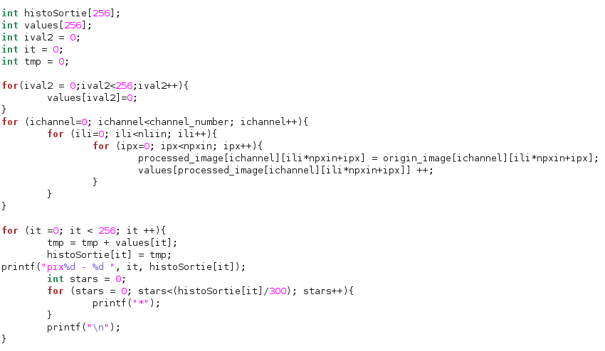
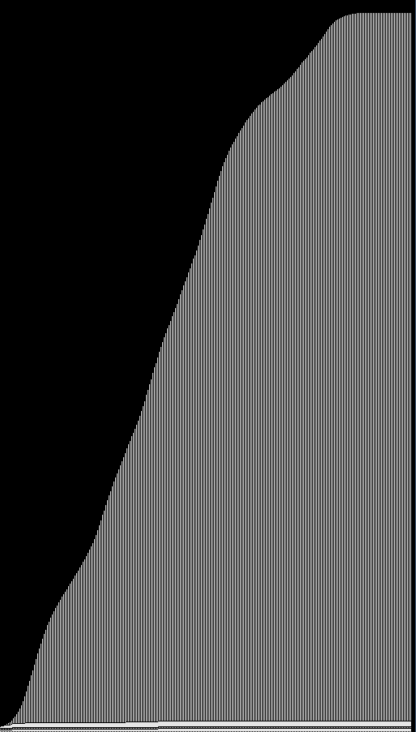
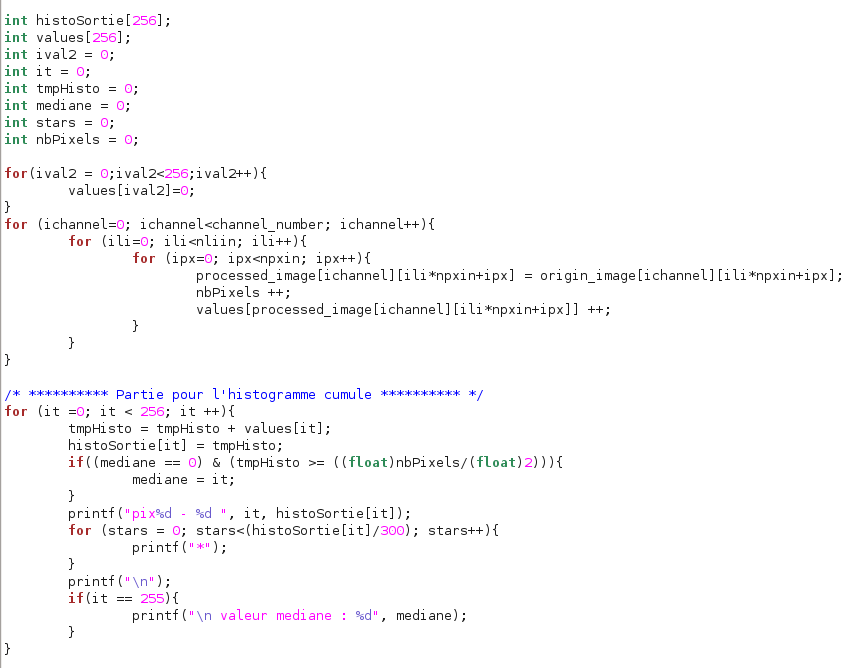
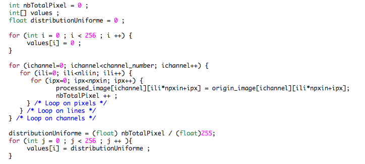
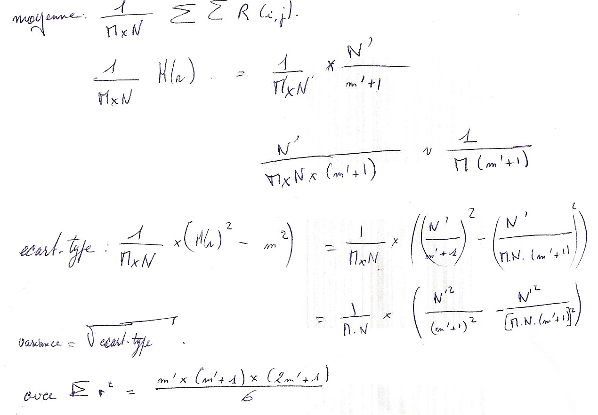
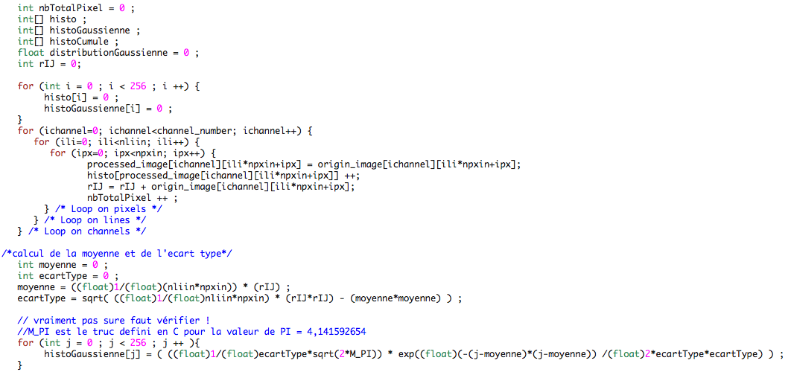
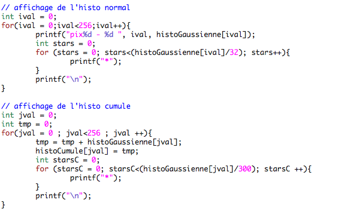

Diane Delallée - M1 Informatique
T D 5 : Traitement radiométrique global par adaptation de l’histogramme à un modèle
1. Histogramme cumulé
a. Calcul de l’histogramme cumule
Pseudo-code permettant de calculer l'histogramme cumulé d'une image :
 
L'histogramme cumulé de gauche est celui du canal vert de l'image de Léna.
b. Recherche de la valeur médiane
Après avoir calculé l'histogramme cumulé d'une image, on va parcourir celui-ci afin de savoir à partir de quel moment la moitié du nombre total de pixels est dépassé.

2. Adaptation à un modèle
a. Algorithme d’adaptation
// penser a initialiser rOrigine, LUT[rOrigine]
fonctionAdaptationLUT(){
// initialisation des variables
int rModele = 0;
int[] LUT = new int[256] ;
Pour (int i = 0 ; i ‹ 256 ; i ++ ){
LUT[i] = 0 ;
}
// mis a jour du tableau de transformation : LUT
Pour(int rOrigine = 0 ; rOrigine ‹ NbTotalPixel ; rOrigine ++ ){
Tant que ( ( rModele ‹ nbTotalPixel ) & ( histoCumuleModele[rModele] / nModele ‹ histoCUmuleOrigine[rOrigine] / nOrigine ) ){
rModele = rModele + 1 ;
}
LUT[rOrigine] = rModele ;
}
}
b. Modèles de distribution – Distribution uniforme

c. Distribution uniforme - Statistiques
// regarde sur le feuille poly dans le dossier ('question2-C')

d. Modèles de distribution – Distribution Gaussienne

3. Programmation et rapport HTML
----------------------------------------------------------------------------------------------------------------------------------------------------------------------------------------------------------------------------------------------------
Notes personnelles :